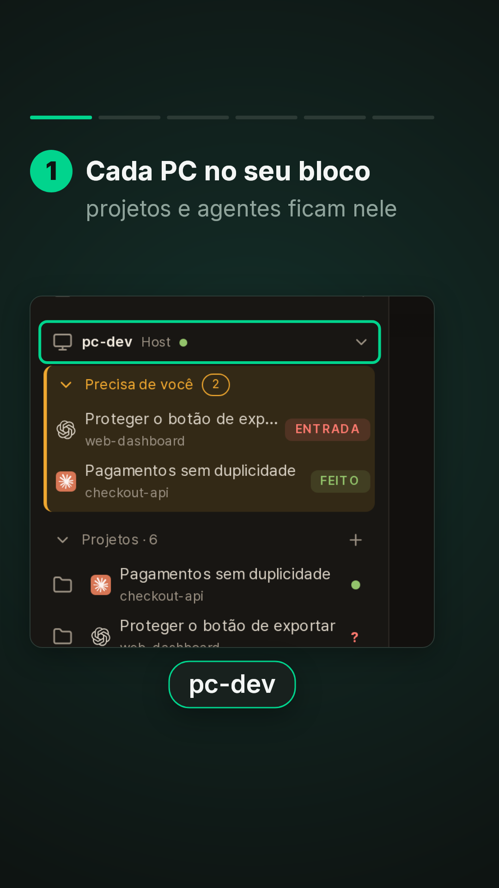
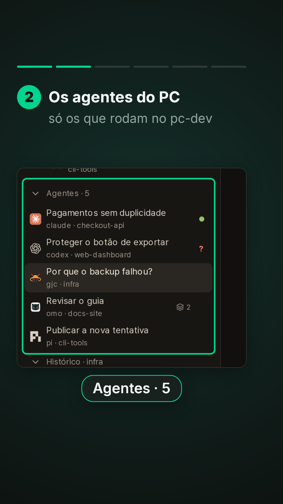
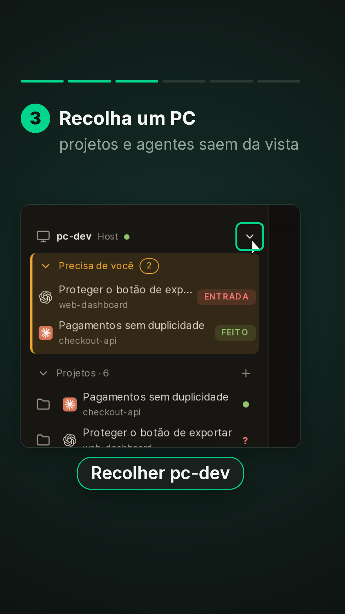
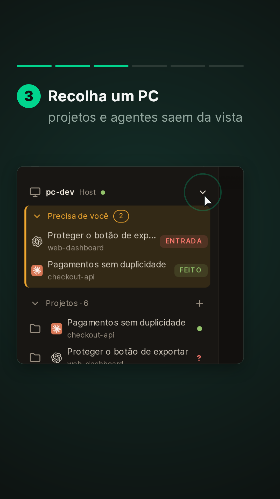
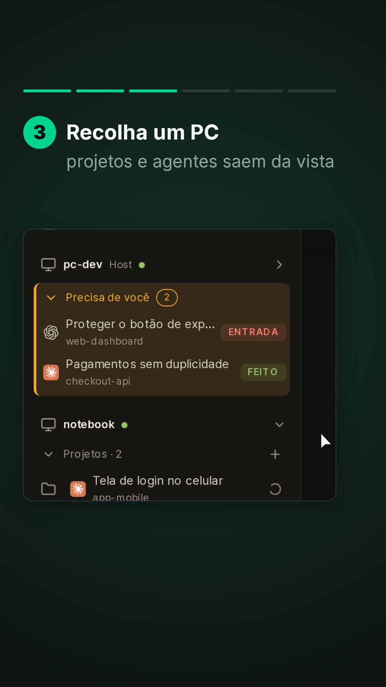
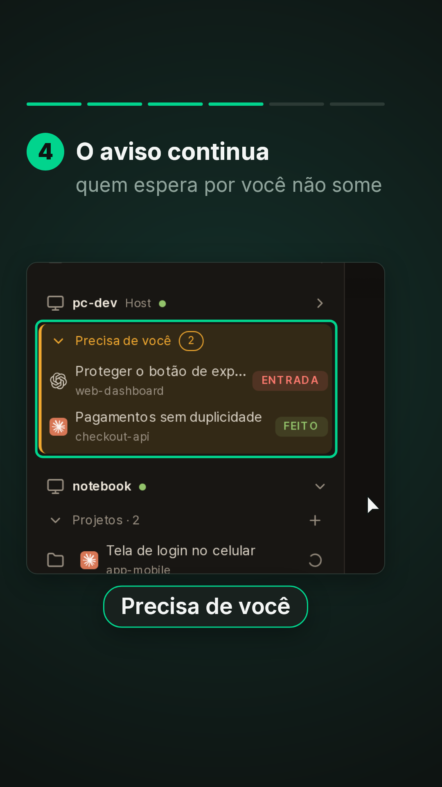
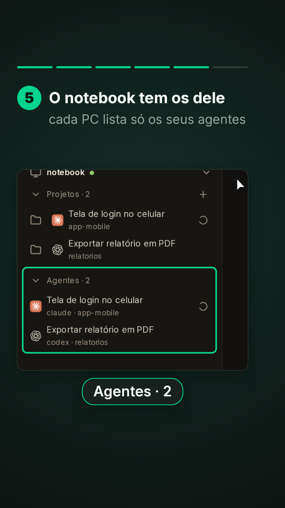
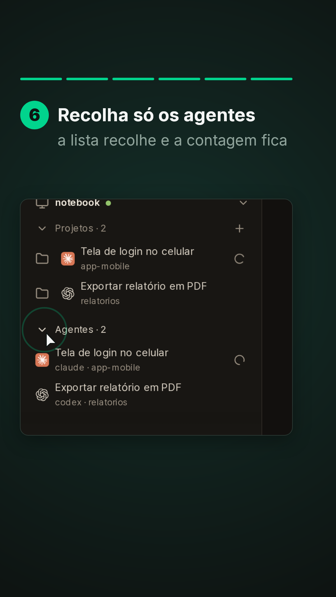
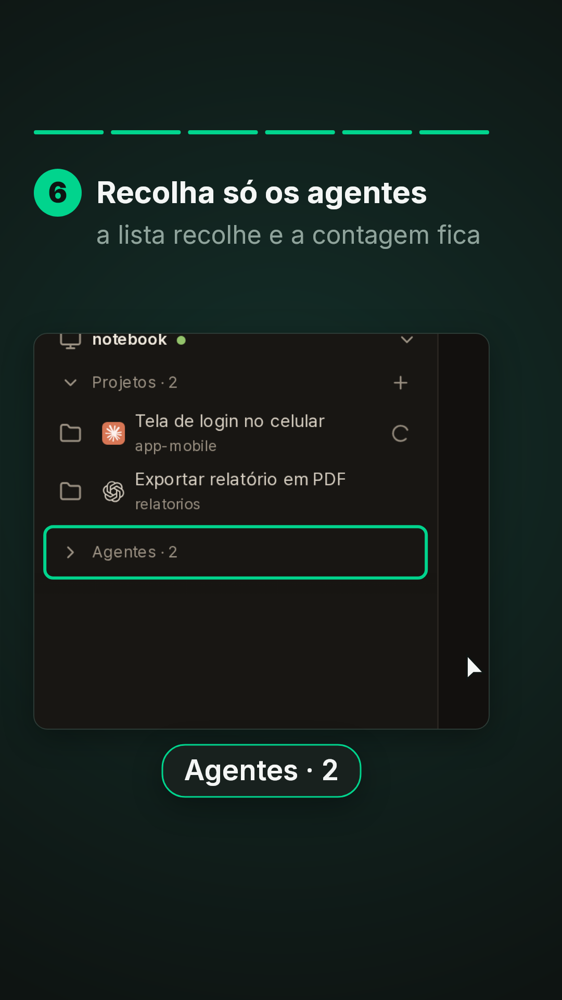

# Barra lateral: os Agentes dentro de cada PC (série "Veja em ação" do DevDA, vídeo 7) - **Formato:** 9:16 (1080x1920), **48 s**, sem áudio, paleta Data Agile. Material de treinamento. - **Para que serve:** na barra lateral, cada PC tem o próprio bloco, com "Precisa de você", Projetos e Agentes daquele PC (PR #20). Recolher um PC esconde os projetos e os agentes dele, mas o "Precisa de você" continua à vista. A dobra de Agentes é guardada por PC. - **Material:** prints da **sessão de demonstração** com textos fictícios em pt-BR. A demo tem um PC só, então `_captura/prep-barra.py` acrescenta na cópia da demo um segundo PC fictício, o "notebook", com os projetos app-mobile e relatorios e os agentes "Tela de login no celular" e "Exportar relatório em PDF". Desktop 1440x1000 @2x (mais alto para os 5 agentes do pc-dev caberem acima do rodapé da barra). Captura: `_captura/shoot-barra.ts`. - **Rótulos exatos** (`i18n.pt.ts`): "pc-dev", "Host", "notebook", "Precisa de você", "Projetos · 6", "Agentes · 5", "Projetos · 2", "Agentes · 2", "Recolher pc-dev" (nome do botão de seta ao lado do PC). ## Gramática de movimento Igual aos vídeos 1 a 6. Barra de 6 passos. ## Tabela | tempo | passo | câmera | objetos e motion | legenda (título / apoio · rótulo) | |---|---|---|---|---| | 0–4,4 | Capa | — | — | **Cada PC, / seus agentes** / a barra lateral separa o que roda em cada máquina | | 4,4–11,0 | 1 | tela inteira, zoom no topo da barra (5,6) | contorno na linha do pc-dev | Cada PC no seu bloco / projetos e agentes ficam nele · "pc-dev" | | 11,0–17,0 | 2 | desce até os Agentes (11,2) | contorno em Agentes · 5 e na lista | Os agentes do PC / só os que rodam no pc-dev · "Agentes · 5" | | 17,0–24,0 | 3 | volta ao topo (17,2) | cursor na seta (18,4); contorno; clique (20,6); o pc-dev recolhe | Recolha um PC / projetos e agentes saem da vista · "Recolher pc-dev" | | 24,0–30,0 | 4 | topo | contorno no bloco | O aviso continua / quem espera por você não some · "Precisa de você" | | 30,0–37,0 | 5 | desce ao notebook (30,2), que já subiu quando o pc-dev recolheu | contorno em Agentes · 2 e na lista | O notebook tem os dele / cada PC lista só os seus agentes · "Agentes · 2" | | 37,0–43,0 | 6 | notebook | cursor na seta de Agentes · 2 (38,6); clique (39,6); a lista recolhe; contorno | Recolha só os agentes / a lista recolhe e a contagem fica · "Agentes · 2" | | 43,0–48 | Fechamento | — | círculo, visto, frase | **Tudo no / seu lugar** / agentes, projetos e avisos por PC |